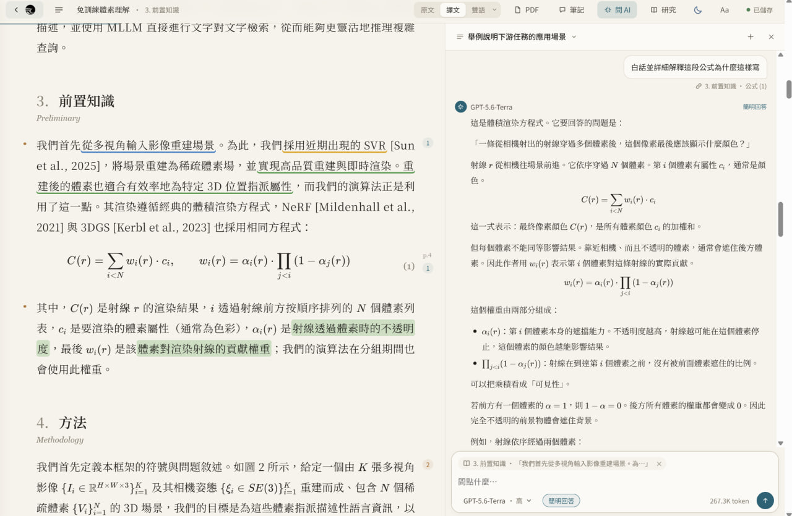
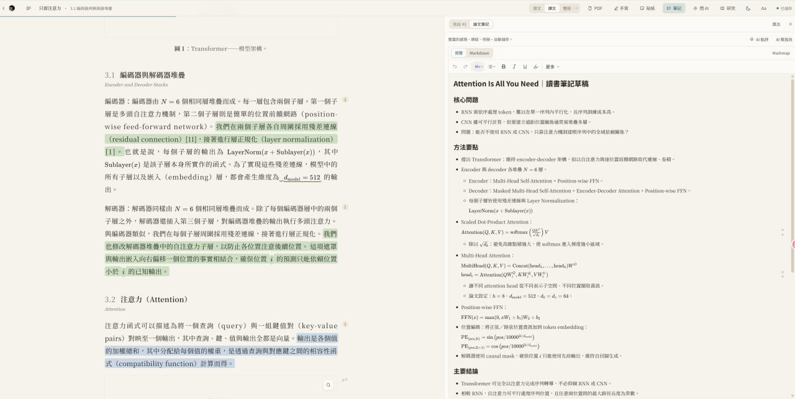
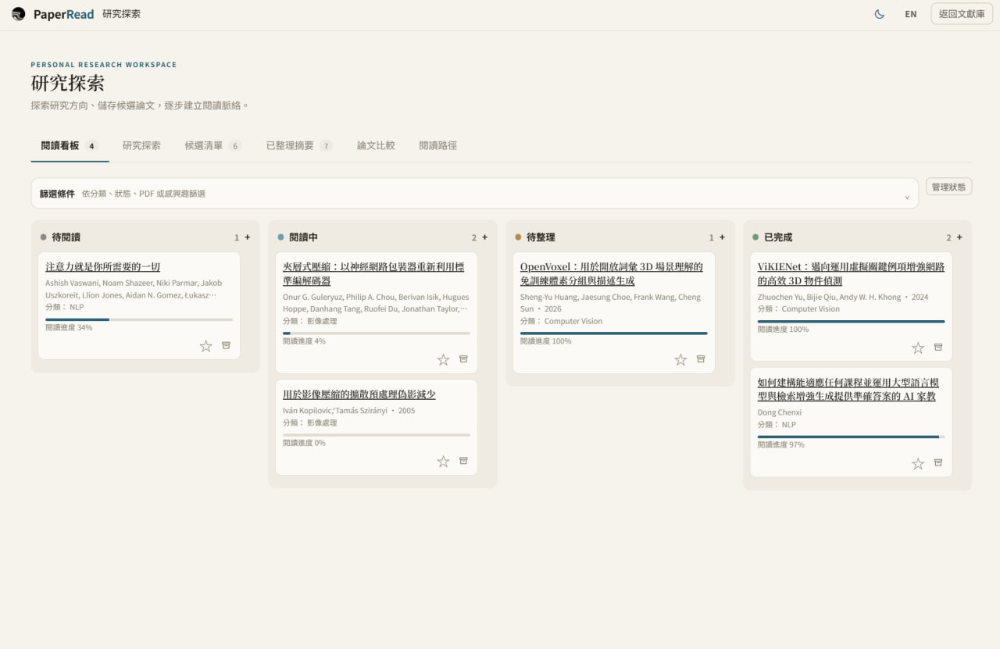

問 AI：引用幾段，一起問
選中正文拖進輸入框，或者點段落上的“問 AI”，每段一個小標籤。問題會帶上這幾段和你正在讀的上下文。
你做過的標記不會每次都塞給模型；問到“標紅的”“劃線”“我的筆記”時，才按顏色找出來。
“我標紅的那幾句話分別對應哪個公式？”演示裡有這樣一段真實的對話，可以開啟看。
匯入 PDF，用你已經在用的 Claude Code、Codex，或者免費模型，在後臺逐頁翻譯。公式、表格照原文排好，隨時對照原頁，邊讀邊劃線、記筆記、問 AI。
開源免費 · 本地執行，支援自選網盤同步文獻庫

翻譯軟體給你一堆斷行的文字；PaperRead 給你一本排好版、能批註、能隨時追問的中文論文。
宋體正文、舒服的行寬，公式用 KaTeX 按原文重排，表格是三線表，參考文獻保留原文。
一鍵切“對照”，每段下附英文；右側開原頁，跟著閱讀位置翻頁，框出當前段落。
正文只放忠實的譯文；AI 的解釋、發現的原文筆誤放在頁邊，一眼分清哪句是論文說的。
可以一次引用好幾段來問；問“我標紅的那些”，它會找出你紅色的劃線一起看。
四色熒光筆或下劃線；筆記裡的問題一鍵讓 AI 回答。全部按原文順序彙總，可匯出 Markdown。
拖進任何 PDF；或填 arXiv 編號、DOI、論文標題、OpenReview / ACL / bioRxiv 連結，自動找 PDF、補全資訊。
選中正文拖進輸入框，或者點段落上的“問 AI”，每段一個小標籤。問題會帶上這幾段和你正在讀的上下文。
你做過的標記不會每次都塞給模型；問到“標紅的”“劃線”“我的筆記”時，才按顏色找出來。

右側原頁跟著你讀到的位置翻頁，並框出這一段在 PDF 裡的位置。公式、表格有疑問，掃一眼就能核對。
整篇還有一頁“論文筆記”。勾選要哪些，匯出成 Markdown，放進 Obsidian、Notion。

論文和分類都能置頂；自己建分類，把論文拖進去；最近閱讀、星標、閱讀進度一目瞭然；複製 GB/T 7714、APA、BibTeX 引用；匯出單檔案離線網頁發給別人；刪掉的論文先進回收站。

匯出的離線網頁和這個線上演示都適配手機：通勤路上接著讀，劃線照樣能用。

設定裡會自動檢測本機裝了什麼，點“試譯一句”馬上知道能不能用。某一頁失敗會自動重試，額度用完就停下，等恢復後接著譯。每次翻譯用了多少 token 都有記錄；用 Claude 訂閱時還能看到 5 小時額度用到多少。
| 來源 | 要什麼 | 說明 |
|---|---|---|
| Claude Code推薦 | 裝好並登入 Claude Code | 不用 Key，用你訂閱的額度；會看原頁圖核對公式，譯得最好 |
| Codex CLI | 裝好並登入 Codex | 不用 Key，用 ChatGPT 賬號 |
| API 介面 · 國內直連 | API Key | DeepSeek、智譜、阿里雲百鍊、Kimi、矽基流動、魔搭。智譜 GLM-4.7-Flash、矽基流動小模型免費；DeepSeek 一篇 20 頁論文幾毛錢 |
| API 介面 · 海外 | API Key（國內要開梯子） | OpenAI、Anthropic、Gemini、OpenRouter、Groq、Cerebras；後四家有免費額度 |
| API 介面 · 本機免費 | 裝好 Ollama 或 LM Studio | 完全離線，推薦 qwen3.5:9b（顯示卡小用 4b） |
| API 介面 · 自定義地址 | 地址 + Key | 任意 OpenAI 相容介面、中轉站；點“獲取模型列表”直接拉模型名 |
最省事是下載安裝包，不用裝 Python：Windows、macOS（Apple 晶片）、Linux 都有。
在 Releases 下載 Windows 的 .exe、macOS 的 .dmg 或 Linux 的 .AppImage，裝好開啟就是獨立視窗。也可以從原始碼執行（要 Python 3.10+）。
右上角“設定”，選 Claude Code、Codex CLI 或 API 介面（DeepSeek、智譜、本機 Ollama……），點“試譯一句”確認能用。
把 PDF 拖進視窗，或貼上 arXiv 編號、論文連結。已譯的頁馬上能讀，沒譯到的先顯示原頁。
提示“無法驗證開發者”或“Apple 無法驗證是否包含惡意軟體”：先點“完成”（不要點“移到廢紙簍”），開啟“系統設定 → 隱私與安全性”，向下找到安全性提示，點“仍要開啟”；在確認視窗點“開啟”，按提示輸入登入密碼或使用 Touch ID
提示“已損壞，無法開啟”：先從 PaperRead 官方 Releases 重新下載，並把應用拖進“應用程式”；檔案也可能確實損壞或被改動，不能只憑這條提示判斷原因。只有確認檔案來自這個官方倉庫、並信任該檔案後，才在“終端”執行下面的命令，再重新開啟 PaperRead；這條命令移除隔離屬性，不會修復損壞的檔案
xattr -dr com.apple.quarantine /Applications/PaperRead.app為什麼會出現驗證提示：目前的 macOS 安裝包只做了臨時簽名，沒有 Apple 開發者證書，也沒有經過公證，因此可能被系統攔截；程式碼完全開源，也可以從原始碼執行
如果系統提示“將損壞你的電腦”，或明確檢測出惡意軟體並要求移到廢紙簍，請停止安裝，不要用上面的步驟繞過；按 Apple 官方說明處理
需要 Python 3.10+；從 Releases 下載原始碼 zip 並解壓，Windows 雙擊 start.cmd，macOS / Linux 在解壓目錄裡執行 ./start.sh；也可以用 pip：
pip install git+https://github.com/Edwardxlai/PaperRead
PaperRead整篇翻譯預設超過 60 頁時會先確認，可以選擇全部翻譯、只譯前 60 頁或先不譯；上限在“設定 → 模型”裡修改，填 0 表示不詢問
能，論文列表和分類支援批次複製或儲存 GB/T 7714、APA、BibTeX 引用；缺少作者、年份等資訊時會提示補齊
能，目前支援中文、日語、韓語、西班牙語、法語和德語，預設譯成中文。在“設定 → 閱讀 → 論文譯成”裡修改預設語言，也可以在匯入時單獨選擇；還可以直接讀英文原文。介面語言獨立設定，目前支援中文和英文
PaperRead 本身免費開源。翻譯用的是你自己的模型：Claude Code / Codex 用你已有的訂閱額度；API 介面裡標“免費”的模型和本機 Ollama 不花錢，其他按量計費，DeepSeek 一篇 20 頁論文幾毛錢。
和你平時在終端裡用 claude 一樣：平時要，這裡也要。不想折騰的話，在設定的“API 介面”裡選智譜、矽基流動（都有免費模型），或者本機 Ollama，國內直連。
預設儲存在本機，每篇論文一個資料夾；你可以直接備份整個文獻庫資料夾。翻譯和提問時，相關內容會發給你選擇的模型
能。文獻庫裡右鍵一篇論文 → “匯出離線 HTML”，得到一個單檔案網頁，對方雙擊用瀏覽器開啟就能讀：譯文、公式、原頁圖、你的劃線和筆記都在裡面。原頁圖打包在檔案裡，所以不小（27 頁的論文約 10 MB）。
會存在你自己的瀏覽器裡，別人看不到。演示不能匯入新論文、不能提問；裝到本機後才有完整功能。